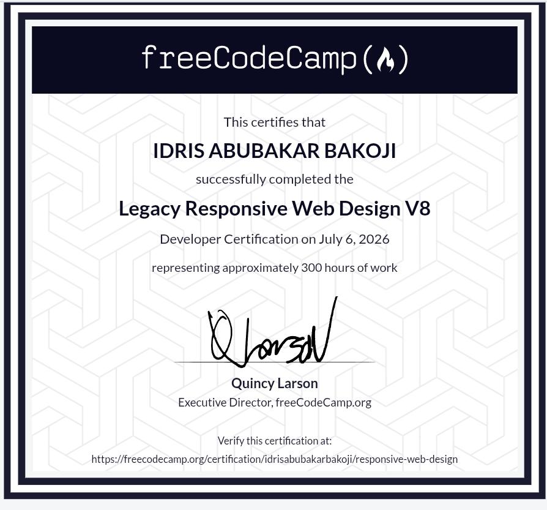

Designing simple systems with complex dedication.
I am Idris Abubakar Bakoji, a developer bridging the gap between hardware engineering structures and modern web interfaces.
About Me
Driven by a deep curiosity regarding how physical hardware interacts with code layers, I balance rigorous academic engineering benchmarks with clean, accessible interface design.
At 30 years old, my approach to development is measured, precise, and practical. I prioritize structured logical architecture over visual noise.
Education
Northwest University, Kano
PresentB.Sc. Software Engineering (Level 200)
Focusing core coursework on algorithm structures, Object-Oriented Analysis, and foundational database architecture systems.
Kano State Polytechnic (SOT)
ConcludedNational Diploma (ND) in Computer Engineering
Acquired extensive practical insight regarding microprocessors, computer networking topologies, logic gate arrays, and physical system configuration.
Technical Skills
Believing firmly in mastery over fundamentals, I maintain a transparent, ongoing approach toward expanding my software knowledge stack.
Certificates

Responsive Web Design
Issued by freeCodeCamp
An extensive curriculum representing over 300 hours of structural design, web standards layout challenges, and cross-browser accessibility assessments.
Open Official Verification Link →Selected Work
01 / Unified Portfolio Ecosystem
An intentional, architecture-driven presentation space condensing individual background modules cleanly within a decoupled single-file layout model.
02 / Semantic Structure Repositories
A compilation of algorithmic interface structures engineered to address rigorous industry responsive standards guidelines.
Services
Front-End Layout Engineering
Translating wireframes perfectly into functional, accessible layouts adhering precisely to strict structural web standards.
Hardware Architecture Consultations
Applying rigorous Computer Engineering insights to diagnose, clean, configure, or optimize physical client workstations.
Media Portfolio
01 / Audio Log
A native audio rendering element hosting voice notes, documentation breakdowns, or podcast features.
02 / Local Video Asset
Self-hosted physical workspace captures or code breakdown clips engineered with high compressed clarity.
03 / Streamed Video Architecture
Embedded streaming architectures highlighting deep integration with third-party web content APIs.
Experience
Independent Development Practice
OngoingSelf-Directed Learning / Open Build Testing
Consistently merging abstract algorithmic insights gained via classroom settings directly into performant code prototypes.
Testimonials
"Idris shows incredible resilience. Balancing 300+ hour programming certificates with a core Software Engineering degree illustrates true dedication to practical skills development."
Contact
Have an internship role, collaborative project opportunity, or structural hardware puzzle? Let's initiate a conversation.